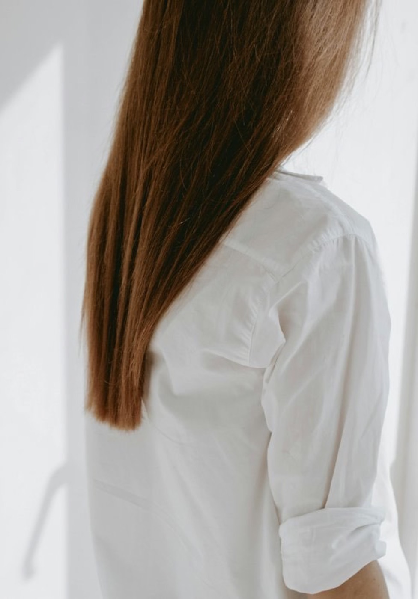
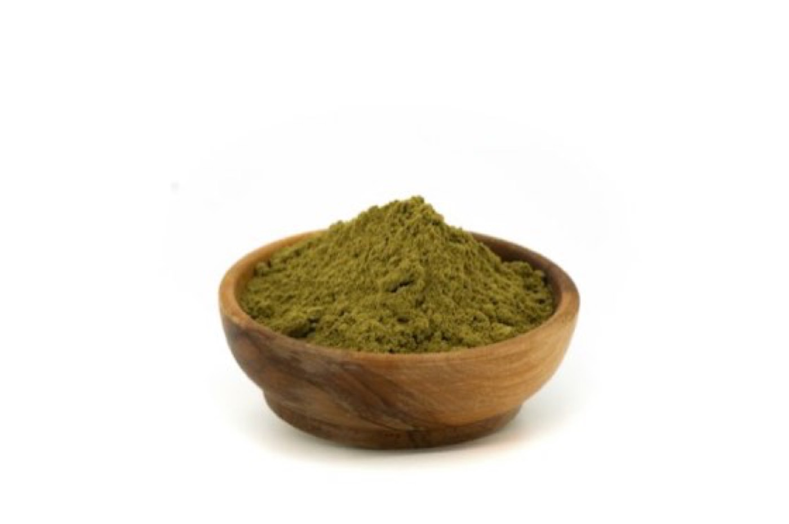

Hello
はじめまして、Lisaです
このページを開いてくださって、ありがとうございます。ReSelect の Lisa です。
以前の私は、有名サロンでトップカラーリストの方に毎回色を選んでもらっていました。しみてヒリヒリしても、「高いのだから、いいもののはず」と思い込んでいたんです。
転機は、あるオンラインレッスン。講師の方の髪があまりに艶やかで、2回目についに「どうしてそんなに綺麗なんですか？」とお聞きしました。答えは、ヘナでした。
すぐにパッチテストをして、オンラインで初めてのヘナ染め。続けるうちに、髪のツヤとハリに自分でも驚きました。白髪が出てきて月1回は欠かせない今、家で手軽に染められて、しかも髪をほめてもらえる。我慢して、お金を払って、髪を傷めていたあの頃は何だったんだろうと思います。
髪は、顔の額縁。どんなにきれいにお化粧をしても、髪がパサついていると生活感が出てしまいます。年齢を重ねるほど、髪は大切になります。
ヘナで髪が元気になって、きれいになって、喜んでもらえる。それが今の私のいちばんの喜びです。まずは、のぞいてみるだけで大丈夫。気軽にメッセージをくださいね。
What is ReSelect
ReSelect は、艶髪を「選び直す」仲間の集まりです
きれいに塗れるコツ
溶き方、塗り方、置き時間。自分で塗っても、ムラなく仕上げるコツを分かち合います。
続けられるリズム
ヘナは「続けるほど楽しみになる」もの。無理なく続けられる、自分なりのリズムを見つけます。
聞ける仲間がいる
「これで合ってる？」をすぐに聞ける。毎月の艶ヘナ会で、同じ思いの仲間とつながれます。

Why Henna
私がクイーンズヘナを選ぶ理由
- 1
インドで育った植物のちから
ヘナは、葉に含まれる「ローソン」という色素で髪を染める植物。古くからカラートリートメントとして使われてきました。
- 2
「化学染料なし」を検査で確かめている
ジアミンなどの化学染料について検査を行い、試験報告書を公式サイトで公開しています。
- 3
染めながら、髪をいたわる
使う目的は、髪のトリートメントと白髪のカラーリング。染めるたびに、髪にツヤを与えます。
緑の粉が、髪の上で温かい赤銅色に変わる。はじめて見ると、ちょっと感動します。
クイーンズヘナは「染毛料」で、分類は化粧品です。医薬品ではないため、病気の治療や体調改善を目的に使うものではありません。
How to
はじめてのヘナ、自分で塗る流れ
分量と置き時間は、使うヘナの説明書に合わせてください。艶ヘナ会では、実際に塗るところをお見せします。
パッチテスト（48時間）
小さじ1杯のヘナを同じ量の水で溶き、腕の内側に10円玉ほど塗ります。30分後と48時間後に見て、赤み・かゆみなどがなければ使えます。
道具をそろえる
ヘナ、ボウル、ハケ、手袋、ケープやタオル、ラップ。汚れてもいい服に着替えておくと安心です。
ヘナをお湯で溶く
説明書の分量のお湯を少しずつ加え、なめらかなペーストにします。
根元から、たっぷりと
髪を小分けにして、白髪の気になる根元から塗っていきます。
ラップで包んで待つ
ラップで包み、説明書の時間だけ置きます。好きな音楽をかけたり、お茶を淹れたり。待つ時間も楽しみのひとつです。
ぬるま湯でしっかり流す
ぬるま湯でていねいに流し、乾かせば完成です。
Salon Party in Daikanyama
自分で塗るのが不安な方は、代官山のサロンで一緒に
はじめての方も、Lisaがとなりで塗り方をサポートします。待ち時間はお茶を飲みながらおしゃべり。女子会のように楽しく、帰るころには髪がつやつやに。
- 1髪の悩みと色の相談
- 2Lisaのサポートで、自分で塗ってみる
- 3置き時間はお茶とおしゃべり
- 4流して、仕上がりを一緒に楽しむ
- 参加費
- 2,200円（税込・サロンの使用料として）
- 持ち物
- ご自身のヘナ
- 場所
- 代官山のプライベートサロン（詳しい場所はお申し込み後にお知らせします）
- 対象
- 会員登録をしてくださった方
- 日程
- Lisaにお問い合わせください
塗った後に髪を流せる環境があります。汚れてもいい服でお越しください。
Colors
色えらびは、Lisaと一緒に
「白髪を隠す」ためではなく、「好きな色をまとう」ために。元の髪色や白髪の量で仕上がりは変わるので、あなたに合う色を一緒に選びましょう。
色はイメージです。実際の仕上がりとは異なります。
Monthly Meetup
毎月の「艶ヘナ会」
オンラインで気軽に参加できる、ReSelect の集まりです。カメラはオフでも大丈夫。
- 日時
- 毎月第2土曜日 20:00〜
- 場所
- オンライン（Zoom）
- 内容
- 塗り方の実演・質問タイム・仲間とのおしゃべり
参加用のリンクは、メッセージをくださった方に個別にお送りします。
Salons
サロンはどこにあるの？
近くで相談したい方は、全国6つの直営サロンへ。東京なら、Lisaの代官山サロン会もあります。
直営サロンの営業時間・ご予約は、各サロンのページ（公式サイト）でご確認ください。
Your Path
ReSelect の楽しみ方
艶ヘナ会をのぞく
まずは見るだけでOK。ヘナってこういうものなんだ、を体感してください。
自分塗りデビュー
Lisaと一緒に色を選んで、はじめての一回を。不安な方は代官山のサロン会で一緒に塗りましょう。
「好き」を分かち合う
ヘナの良さを周りに伝える仲間として活動する道もあります。興味のある方には、個別に書面でご説明します。
Q&A